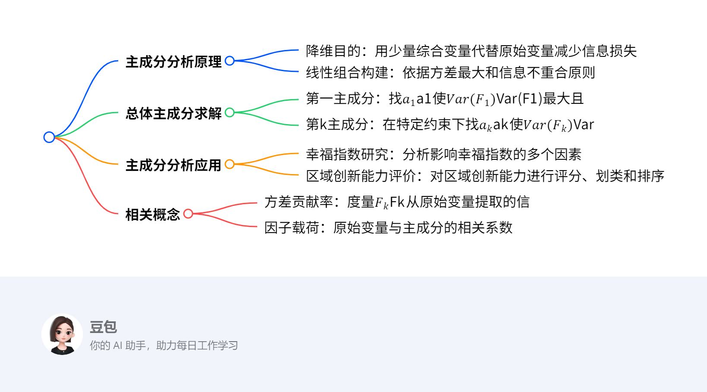

第七章：主成分分析¶
概览¶
- 一段话总结： 主成分分析是多元统计分析中的一种重要方法，旨在降维，用少量综合变量代替原始变量，减少信息损失。通过构建线性组合，依据方差最大化及变量间互不相关的原则确定主成分。如在研究幸福指数、国民收入与支出等案例中，计算协方差阵或相关阵的特征值和特征向量，确定方差贡献率，以此判断保留主成分的数量。还介绍了因子载荷、信息被提取率等概念，以及主成分分析在人脸识别、区域创新能力评价等多领域的应用。
¶
- 详细总结：
- 主成分分析原理：主成分分析是多元统计分析方法，核心目的是降维，即使用少量综合变量\(F\)代替原始变量\(X\)，同时保证信息（特征）损失最少。这些综合变量通过原始变量的线性组合得到，且要求信息损失少、信息不重合，即\(Var(F_{i})\)尽可能大且\(Cov(F_{i}, F_{j}) = 0\)（\(i \neq j\)）。
- 总体主成分：设\(X = (X_{1}, X_{2}, \cdots, X_{p})^{T}\)为\(p\)维随机变量，主成分通过线性组合\(F_{i} = a_{i}^{T}X\)（\(i = 1,2,\cdots,p\)）确定。以第一主成分为例，要在\(a_{1}^{T}a_{1} = 1\)的约束条件下，找到\(a_{1}\)使\(Var(F_{1}) = a_{1}^{T}\sum a_{1}\)达到最大，此时\(F_{1}\)就是第一主成分；第\(k\)主成分则是在\(a_{k}^{T}a_{k} = 1\)及\(Cov(F_{k}, F_{i}) = 0\)（\(i = 1,2,\cdots,k - 1\)）的条件下，找\(a_{k}\)使\(Var(F_{k}) = a_{k}^{T}\sum a_{k}\)最大。
-
主成分分析步骤（以实例说明）：
- 计算相关矩阵：在对某年全国30个省市自治区的8项经济指标作主成分分析时，首先计算样本相关阵\(R\) ，如下表：
GDP 居民消费水平 固定资产投资 职工平均工资 货物周转量 居民消费价格指数 商品零售价格指数 工业总产值 GDP 1.000 0.267 0.848 0.191 0.617 -0.273 -0.264 0.874 居民消费水平 0.267 1.000 0.443 0.718 -0.151 -0.229 -0.593 0.363 固定资产投资 0.848 0.443 1.000 0.401 0.408 -0.247 -0.366 0.688 职工平均工资 0.191 0.718 0.401 1.000 -0.356 -0.146 -0.539 0.104 货物周转量 0.617 -0.151 0.408 -0.356 1.000 -0.251 0.022 0.659 居民消费价格指数 -0.273 -0.229 -0.247 -0.146 -0.251 1.000 0.763 -0.119 商品零售价格指数 -0.264 -0.593 -0.366 -0.539 0.022 0.763 1.000 -0.192 工业总产值 0.874 0.363 0.688 0.104 0.659 -0.119 -0.192 1.000 - 计算特征值及方差贡献率：计算样本相关阵\(R\)的特征值及方差贡献率，前3个特征值累计贡献率已达88.27% ，说明前3个主成分基本包含了全部指标具有的信息，如下表：
主成分 特征值 方差贡献率 累计方差贡献率 1 3.665 45.813 45.813 2 2.183 27.293 73.106 3 1.213 15.163 88.270 4 0.404 5.048 93.317 5 0.205 2.561 95.878 6 0.179 2.232 98.109 7 0.118 1.475 99.585 8 0.033 0.415 100.000 - 计算特征向量及主成分得分：计算样本相关阵\(R\)的特征向量，得到前三个主成分的表达式，如\(F_{1}^{*}=0.45X_{1}^{*}+0.33X_{2}^{*}+\cdots+0.416X_{8}^{*}\)等。通过主成分得分函数换算得到样本主成分得分，并可进行排序、评价和分类等操作。
- 主成分分析的应用：主成分分析在多个领域有广泛应用，如幸福指数研究、区域创新能力评价、人脸识别、人类群体遗传结构分析、判断《红楼梦》作者等。在实际应用中，可根据具体问题确定主成分的数量和命名，常见方法有碎石图、凯泽潜在根法、信息被提取率（共同度）等 ，不同学科领域对保留主成分的比例要求不同，如自然科学≥95%，社会科学≥60%。
- 相关概念：
- 方差贡献率：度量了\(F_{k}\)从原始变量\(X_{1}, X_{2}, \cdots, X_{p}\)中提取的信息。
- 因子载荷：原始变量\(X_{i}\)与主成分\(F_{k}\)的相关系数\(\rho_{i k}=\frac{c_{i k}\sqrt{\lambda_{k}}}{\sqrt{\sigma_{i i}}}\) ，\(c_{i k}^{2}\lambda_{k}/\sigma_{i i}\)表示第\(i\)个原始变量\(X_{i}\)被\(F_{k}\)提取的信息的比重。
- 信息被提取率（共同度）：若选取了\(m\)个主成分，\(v_{i}^{(m)}=\sum_{k = 1}^{m}\rho_{i k}^{2}=\sum_{k = 1}^{m}c_{i k}^{2}\lambda_{k}/\sigma_{i i}\)称为第\(i\)个原始变量\(X_{i}\)被\(m\)个主成分\(F_{1}, F_{2}, \cdots, F_{m}\)的信息被提取率。
- 关键问题：
- 问题1：如何确定主成分的个数？
- 答案：可以通过计算方差贡献率来确定，一般当累计方差贡献率达到一定比例（如自然科学≥95%，社会科学≥60%）时，对应的主成分个数即可保留。也可结合碎石图、凯泽（Kaiser）潜在根法、信息被提取率（共同度）等方法综合判断。
- 问题2：主成分分析与其他分析方法（如聚类分析、因子分析）有什么联系和区别？
- 答案：联系在于主成分分析可与这些方法融合使用，如主成分聚类。区别在于主成分分析主要用于降维，将多个原始变量转化为少数综合变量；聚类分析侧重于将数据对象分组；因子分析是从多个变量中提取公共因子，解释原始变量之间的相关性。
- 问题3：在实际应用中，主成分分析对数据有什么要求？
- 答案：数据需具有一定的相关性，可通过KMO检验和Bartett's检验判断，KMO值越趋于1，变量相关性越强，越适合做主成分分析；Bartett's检验中越拒绝原假设（相关系数矩阵为单位阵），也越适合。此外，数据应尽量避免异常值，否则可能影响分析结果的准确性。
1 主成分分析原理¶
主成分分析原理 - 降维¶
主成分分析旨在降维，核心是用少量综合变量 \(F\) 代替原始变量 \(X\) ，并使信息（特征）损失最少。
实现方式¶
- 线性组合：通过原始变量的线性组合构建综合变量。
- 信息损失少：要求综合变量的方差 \(Var(F)\)尽可能大，以最大程度保留原始数据信息。
- 信息不重合：各综合变量 \(F_{i}\)与\(F_{j}\)互不相关 ，确保不同综合变量包含的信息不重叠。
2 总体主成分¶
总体主成分¶
- 第一主成分
- 原理：要找向量\(\mathbf{a}_1\)，在约束条件\(\mathbf{a}_1^T\mathbf{a}_1 = 1\)下，使\(Var(\mathbf{F}_1)=Var(\mathbf{a}_1^T\mathbf{X})=\mathbf{a}_1^T\mathbf{\Sigma}\mathbf{a}_1\)达到最大 ，其中\(\mathbf{\Sigma}\)是\(\mathbf{X}\)的协方差阵，\(\mathbf{F}_1=\mathbf{a}_1^T\mathbf{X}\)称为第一主成分。
- 求解方法 - 拉格朗日乘数法：构造函数\(L(\mathbf{a}_1, \lambda)=\mathbf{a}_1^T\mathbf{\Sigma}\mathbf{a}_1+\lambda(1 - \mathbf{a}_1^T\mathbf{a}_1)\) ，通过求偏导并令其为0求解。也可利用二次型理论，已知存在正交阵\(\mathbf{P}\)，使得\(\mathbf{P}^T\mathbf{\Sigma}\mathbf{P}=\text{diag}(\lambda_1,\cdots,\lambda_p)\) ，\(\lambda_1\geq\cdots\geq\lambda_p\)为\(\mathbf{\Sigma}\)特征值，相应正交单位特征向量为\(\mathbf{p}_1,\cdots,\mathbf{p}_p\) 。当\(\mathbf{a}_1 = \mathbf{p}_1\)（对应最大特征值\(\lambda_1\)的特征向量 ）时，\(Var(\mathbf{F}_1)\)达到最大，且\(Var(\mathbf{F}_1)=\lambda_1\) 。
- 例子：假设有二维随机变量\(\mathbf{X}=(X_1,X_2)^T\)，协方差阵\(\mathbf{\Sigma}=\begin{pmatrix}2&1\\1&2\end{pmatrix}\) 。
- 求\(\mathbf{\Sigma}\)的特征值：\(|\mathbf{\Sigma}-\lambda\mathbf{I}|=(2 - \lambda)^2 - 1=\lambda^2 - 4\lambda + 3 = 0\) ，解得\(\lambda_1 = 3\)，\(\lambda_2 = 1\) 。
- 求特征向量：对于\(\lambda_1 = 3\) ，\((\mathbf{\Sigma}-3\mathbf{I})\mathbf{v}_1=\mathbf{0}\) ，即\(\begin{pmatrix}-1&1\\1&-1\end{pmatrix}\begin{pmatrix}v_{11}\\v_{12}\end{pmatrix}=\begin{pmatrix}0\\0\end{pmatrix}\) ，取\(\mathbf{v}_1=\begin{pmatrix}\frac{\sqrt{2}}{2}\\\frac{\sqrt{2}}{2}\end{pmatrix}\)（单位化后 ）。对于\(\lambda_2 = 1\) ，\((\mathbf{\Sigma}-1\mathbf{I})\mathbf{v}_2=\mathbf{0}\) ，即\(\begin{pmatrix}1&1\\1&1\end{pmatrix}\begin{pmatrix}v_{21}\\v_{22}\end{pmatrix}=\begin{pmatrix}0\\0\end{pmatrix}\) ，取\(\mathbf{v}_2=\begin{pmatrix}-\frac{\sqrt{2}}{2}\\\frac{\sqrt{2}}{2}\end{pmatrix}\)（单位化后 ）。
- 第一主成分：根据上述理论，第一主成分\(\mathbf{F}_1=\mathbf{v}_1^T\mathbf{X}=\frac{\sqrt{2}}{2}X_1+\frac{\sqrt{2}}{2}X_2\) ，此时\(Var(\mathbf{F}_1)=\lambda_1 = 3\) 。
- 第\(k\)主成分（\(k > 1\)）
- 原理：在\(\mathbf{a}_k^T\mathbf{a}_k = 1\)及\(Cov(\mathbf{F}_k, \mathbf{F}_i)=\mathbf{a}_k^T\mathbf{\Sigma}\mathbf{a}_i = 0\)（\(i = 1,2,\cdots,k - 1\) ）条件下，找\(\mathbf{a}_k\)使\(Var(\mathbf{F}_k)=Var(\mathbf{a}_k^T\mathbf{X})=\mathbf{a}_k^T\mathbf{\Sigma}\mathbf{a}_k\)达到最大 ，\(\mathbf{F}_k=\mathbf{a}_k^T\mathbf{X}\)称为第\(k\)主成分。
- 求解方法：同样基于协方差阵\(\mathbf{\Sigma}\)的特征值和特征向量求解。在已经确定前\(k - 1\)个主成分对应的特征向量（正交单位向量 ）\(\mathbf{a}_1,\cdots,\mathbf{a}_{k - 1}\)后，从\(\mathbf{\Sigma}\)剩余的特征向量中选取对应特征值次大的（在满足与前面主成分不相关条件下 ）作为\(\mathbf{a}_k\) 。
- 例子（续上例求第二主成分 ）：因为已经得到第一主成分对应的特征向量\(\mathbf{v}_1\) ，对于第二主成分，根据条件，选取对应特征值\(\lambda_2 = 1\)的特征向量\(\mathbf{v}_2\) ，第二主成分\(\mathbf{F}_2=\mathbf{v}_2^T\mathbf{X}=-\frac{\sqrt{2}}{2}X_1+\frac{\sqrt{2}}{2}X_2\) ，\(Var(\mathbf{F}_2)=\lambda_2 = 1\) 。
- 定理 设\(\mathbf{\Sigma}\)是\(\mathbf{X}=(\mathbf{X}_1,\mathbf{X}_2,\cdots,\mathbf{X}_p)^T\)的协方差阵，其特征值按大小排序为\(\lambda_1\geq\cdots\geq\lambda_p\) ，相应的正交单位特征向量为\(\mathbf{a}_1,\cdots,\mathbf{a}_p\) ，则\(\mathbf{X}\)的第\(k\)主成分可表示为\(\mathbf{F}_k=\mathbf{a}_k^T\mathbf{X}=\sum_{i = 1}^{p}a_{ki}X_i\) ，其中\(\mathbf{a}_k=(a_{1k},a_{2k},\cdots,a_{pk})^T\) ，并且\(Var(\mathbf{F}_k)=\lambda_k\) 。
保留几个主成分¶
- 依据方差贡献率判断：方差贡献率是衡量主成分重要性的指标，\(Var(\mathbf{F}_k)=\lambda_k\) ，第\(k\)主成分的方差贡献率为\(\frac{\lambda_k}{\sum_{i = 1}^{p}\lambda_i}\) 。通常累计方差贡献率达到一定比例（如80% - 90%以上 ）时，对应的主成分个数可保留。例如，若前\(m\)个主成分的累计方差贡献率\(\sum_{k = 1}^{m}\frac{\lambda_k}{\sum_{i = 1}^{p}\lambda_i}\geq 85\%\) ，则保留前\(m\)个主成分 。 具体计算时，先求出协方差阵的所有特征值\(\lambda_i\)，再依次计算各主成分方差贡献率及累计方差贡献率，根据设定阈值确定保留主成分数量。
例题¶
主成分分析例题¶
通过对给定随机变量从协方差阵和相关阵分别进行主成分分析，展示主成分分析的具体过程。
求解方法¶
- 从协方差阵出发
- 计算协方差阵的特征值和正交单位特征向量。
- 根据特征值和特征向量确定主成分表达式，主成分是原始变量以特征向量为系数的线性组合。
- 从相关阵出发
- 先将原始变量标准化，标准化后的变量的协方差阵就是原始变量的相关阵。
- 计算相关阵（即标准化后变量的协方差阵）的特征值和正交单位特征向量。
- 确定主成分表达式。
例子解题步骤¶
- 从协方差阵Σ出发
- 已知协方差阵\(\Sigma=\begin{pmatrix}1&2\\2&100\end{pmatrix}\)。
- 计算特征值和特征向量：通过求解特征方程\(|\Sigma - \lambda I| = 0\) ，即\(\begin{vmatrix}1 - \lambda&2\\2&100 - \lambda\end{vmatrix}=(1 - \lambda)(100 - \lambda)-4 = \lambda^2 - 101\lambda + 96 = 0\) ，解得特征值\(\lambda_1 = 100.04\)，\(\lambda_2 = 0.9596\) 。对于\(\lambda_1 = 100.04\) ，代入\((\Sigma - \lambda_1I)a_1 = 0\)求解特征向量并单位化得到\(a_1=(0.0202,0.9998)^T\) ；对于\(\lambda_2 = 0.9596\) ，代入\((\Sigma - \lambda_2I)a_2 = 0\)求解特征向量并单位化得到\(a_2=(0.9998, - 0.0202)^T\) 。
- 确定主成分：根据主成分定义，\(F_1 = 0.0202X_1 + 0.9998X_2\)，\(F_2 = 0.9998X_1 - 0.0202X_2\) 。
- 从相关阵R出发
- 已知相关阵\(R=\begin{pmatrix}1&0.2\\0.2&1\end{pmatrix}\)，将原始变量\(X=(X_1,X_2)^T\)标准化后记为\(X^*=(X_1^*,X_2^*)^T\) ，\(X^*\)的协方差阵就是\(R\) 。
- 计算特征值和特征向量：求解特征方程\(|R - \lambda I| = 0\) ，即\(\begin{vmatrix}1 - \lambda&0.2\\0.2&1 - \lambda\end{vmatrix}=(1 - \lambda)^2 - 0.04 = \lambda^2 - 2\lambda + 0.96 = 0\) ，解得特征值\(\lambda_1^* = 1.2000\)，\(\lambda_2^*\)（文中未完整给出，推测可类似计算 ） ，对应的正交单位特征向量\(a_1^*=(0.7071,0.7071)^T\) 。
- 确定主成分：\(F_1^* = 0.7071X_1^* + 0.7071X_2^*\) ，进一步根据标准化关系\(X^*=\left(\frac{X_1 - \overline{X_1}}{1},\frac{X_2 - \overline{X_2}}{10}\right)^T\)（文中设定 ）展开得到\(F_1^* = 0.7071(X_1 - \overline{X_1}) + 0.07071(X_2 - \overline{X_2})\) ，\(F_2^*\)（文中未完整给出，可类似推导 ） 。
3 主成分分析几何意义¶
主成分分析几何意义¶
通过散点图来直观理解主成分分析。假设有变量\(X_1\)和\(X_2\) ，其数据点在平面直角坐标系中形成散点分布。
基本原理¶
主成分分析是在数据点分布的平面上寻找新的坐标轴\(\mathbf{A}_1\)和\(\mathbf{A}_2\)（一般为正交 ） ，将原始数据点投影到新坐标轴上。\(\mathbf{A}_1\)方向是数据变异最大（方差最大 ）的方向，对应第一主成分；\(\mathbf{A}_2\)方向是与\(\mathbf{A}_1\)正交且数据变异次大的方向，对应第二主成分。这样通过新坐标轴上的投影数据来代表原始数据，实现降维。
求解方法（以二维数据为例）¶
- 计算协方差矩阵：设数据点\((x_{i1},x_{i2})\)（\(i = 1,2,\cdots,n\) ），先计算\(X_1\)和\(X_2\)的均值\(\overline{x}_1\)和\(\overline{x}_2\) ，然后计算协方差矩阵\(\Sigma=\begin{pmatrix}Cov(X_1,X_1)&Cov(X_1,X_2)\\Cov(X_2,X_1)&Cov(X_2,X_2)\end{pmatrix}\) ，其中\(Cov(X_i,X_j)=\frac{1}{n - 1}\sum_{k = 1}^{n}(x_{ki}-\overline{x}_i)(x_{kj}-\overline{x}_j)\) 。
- 求特征值和特征向量：求解协方差矩阵\(\Sigma\)的特征方程\(|\Sigma - \lambda I| = 0\)得到特征值\(\lambda_1\)和\(\lambda_2\)（假设\(\lambda_1\geq\lambda_2\) ） ，再分别代入\((\Sigma - \lambda_iI)\mathbf{v}_i = 0\)求出对应的特征向量\(\mathbf{v}_1\)和\(\mathbf{v}_2\)并单位化 。特征向量\(\mathbf{v}_1\)和\(\mathbf{v}_2\)分别确定了\(\mathbf{A}_1\)和\(\mathbf{A}_2\)的方向。
- 确定主成分：第一主成分\(F_1=\mathbf{v}_1^T\begin{pmatrix}X_1\\X_2\end{pmatrix}\) ，第二主成分\(F_2=\mathbf{v}_2^T\begin{pmatrix}X_1\\X_2\end{pmatrix}\) 。
例子解题步骤¶
- 假设有数据点\((49.3,8)\)，\((39,99.6)\)，\((265.3,83)\) 。
- 计算均值：
- 计算\(X_1\)均值：\(\overline{x}_1=\frac{49.3 + 39 + 265.3}{3}\approx117.87\) 。
- 计算\(X_2\)均值：\(\overline{x}_2=\frac{8 + 99.6 + 83}{3}\approx63.53\) 。
- 计算协方差矩阵：
- \(Cov(X_1,X_1)=\frac{1}{3 - 1}[(49.3 - 117.87)^2+(39 - 117.87)^2+(265.3 - 117.87)^2]\approx13451.71\) 。
- \(Cov(X_1,X_2)=\frac{1}{3 - 1}[(49.3 - 117.87)(8 - 63.53)+(39 - 117.87)(99.6 - 63.53)+(265.3 - 117.87)(83 - 63.53)]\approx - 1740.34\) 。
- \(Cov(X_2,X_2)=\frac{1}{3 - 1}[(8 - 63.53)^2+(99.6 - 63.53)^2+(83 - 63.53)^2]\approx2015.47\) 。
- 协方差矩阵\(\Sigma=\begin{pmatrix}13451.71& - 1740.34\\ - 1740.34&2015.47\end{pmatrix}\) 。
- 求特征值和特征向量：
- 求解特征方程\(|\Sigma - \lambda I| = 0\) ，即\(\begin{vmatrix}13451.71 - \lambda& - 1740.34\\ - 1740.34&2015.47 - \lambda\end{vmatrix}=0\) ，得到特征值（计算过程略 ）\(\lambda_1\)和\(\lambda_2\) 。
- 对于\(\lambda_1\) ，代入\((\Sigma - \lambda_1I)\mathbf{v}_1 = 0\)求解得到特征向量\(\mathbf{v}_1\)并单位化；对于\(\lambda_2\) ，代入\((\Sigma - \lambda_2I)\mathbf{v}_2 = 0\)求解得到特征向量\(\mathbf{v}_2\)并单位化 。
- 确定主成分：
- 第一主成分\(F_1=\mathbf{v}_1^T\begin{pmatrix}X_1\\X_2\end{pmatrix}\) 。
- 第二主成分\(F_2=\mathbf{v}_2^T\begin{pmatrix}X_1\\X_2\end{pmatrix}\) 。
例子¶
主成分分析在经济指标中的应用¶
以某年全国30个省市自治区的8项经济指标（GDP、居民消费水平等 ）为例，展示主成分分析过程。
求解方法¶
- 计算样本相关阵：反映各原始变量间相关性，是后续分析基础。
- 计算特征值及方差贡献率：特征值衡量主成分对数据变异的解释能力，方差贡献率 = 特征值 / 总特征值之和，累计方差贡献率用于判断保留主成分数量，一般达一定比例（如80%以上 ）即可。
- 计算特征向量：确定主成分表达式，主成分是原始变量以特征向量为系数的线性组合。
- 确定主成分表达式：根据特征向量和原始变量得到主成分具体形式。
- 计算主成分得分：通过主成分得分函数，代入标准化后原始变量值计算。
- 排序、评价与分类：依据主成分得分进行地区经济指标的排序、评价，还可通过主成分得分绘制散点图分类。
例子解题步骤¶
- 计算样本相关阵：得到8项经济指标间相关系数矩阵，展示指标相关性。
- 计算特征值及方差贡献率：前3个特征值累计贡献率达88.27% ，说明前3个主成分基本涵盖全部信息。
- 计算特征向量：获取对应特征向量。
- 确定主成分表达式：
- \(F_1^* = 0.45X_1^* + 0.33X_2^* + \cdots + 0.416X_8^*\)
- \(F_2^* = 0.277X_1^* - 0.388X_2^* + \cdots + 0.307X_8^*\)
- \(F_3^* = 0.106X_1^* + 0.254X_2^* + \cdots + 0.193X_8^*\)
- 计算主成分得分：利用主成分得分函数换算，得到各省市主成分得分，如北京\(F_1\)得分为0.494等。
- 排序、评价与分类：
- 排序评价：给出各省市在不同主成分及综合得分（F ）排名，如北京综合得分 -0.13 ，排名15 。
- 分类：可据第1和第2主成分得分绘制散点图分类研究。